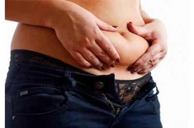

Nỗi lo bụng mỡ của phụ nữ sau sinh
Sau sinh các chị em thường đối diện với nỗi lo về vòng 2 sồ sề, nhăn nhúm và kém thon gọn. Đây là điều khiến phái đẹp vô cùng bất an và tự ti, không chỉ trong sinh hoạt hằng ngày mà còn cả trong quan hệ vợ chồng.  Sau sinh các chị em thường đối diện với nỗi lo về vòng 2 sồ sề, nhăn nhúm và kém thon gọn.Vốn dĩ phần da bụng vốn dĩ bị giãn nở hết mức khi mang thai nên sau khi sinh, vòng 2 thường bị chảy xệ, những tế bào mỡ tích tụ nhanh chóng làm cho bụng chứa đầy mỡ. So với các hình thức béo do tăng cân và thừa mỡ thông thường thì tình trạng bụng mỡ sau sinh phức tạp hơn nhiều, không còn săn chắc như thời con gái.
Vấn đề này khiến chị em nào cũng mang trong mình tâm lý lo ngại, thiếu tự tin mỗi khi giao tiếp, khó lựa chọn trang phục phù hợp. Ngoài ra, bụng mỡ sau sinh còn có những ảnh hưởng về sức khỏe như làm mắc các nguy cơ về bệnh tim mạch, đái tháo đường cao hơn người bình thường. Hơn nữa, béo, thừa cân còn làm tăng nguy cơ bị lãnh cảm ở phụ nữ, ảnh hưởng đến đời sống vợ chồng.
Gen bụng thường không có tác dụng với tình trạng mỡ thừa tích tụ quá nhiều ở bụng sau sinhThực tế cho thấy với các biện pháp giảm béo thông thường như gen bụng sau sinh, chườm nước ấm, ăn kiêng, kem bôi… đều không phát huy tác dụng trong trường hợp này.
Để giải quyết tình trạng sinh xong bụng vẫn như… mang bầu, các chị em cần tìm đến biện pháp giảm béo bằng công nghệ cao. Với phương pháp hút mỡ, lượng mỡ thừa tích lũy tại vùng bụng sẽ được giải phóng hoàn toàn và được loại bỏ ra ngoài một cách nhanh chóng, an toàn.